Manifesto
Sobre a organização visual do poder, a alegoria feminina e a continuidade entre a lei que subordina e a imagem que glorifica. Da nacionalidade dependente na letra ao triunfo da mulher-símbolo na moeda e no brasão: dois registros de um mesmo contrato de poder.
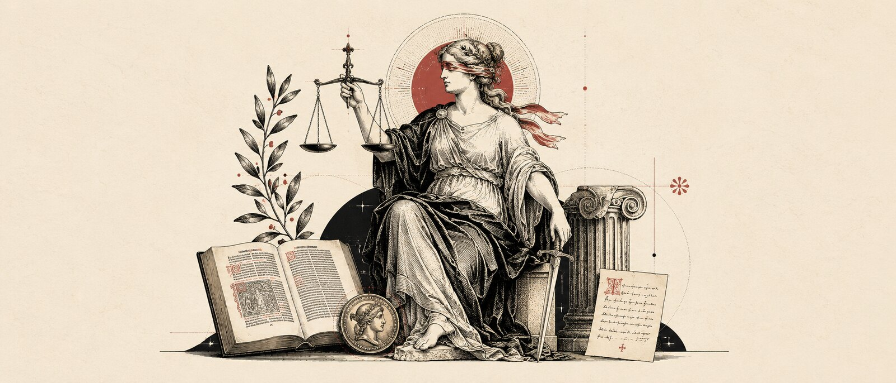
Há um fio que atravessa toda a minha pesquisa, a pesquisa que começou no mestrado e continua no doutorado, e ele é feito de uma pergunta muito simples: por que o mesmo poder que subordina a mulher na lei a glorifica na imagem?
Quando defendi minha dissertação em 2024, “United by marriage, chained by nationality”, havia lido códigos e constituições de meia dúzia de países. Encontrei uma estrutura brutal em sua frieza jurídica: a mulher casada perdia sua nacionalidade de origem e adquiria automaticamente a do marido. Ius sanguinis a patre — o sangue que transmite a pertença nacional é o do pai. Durante mais de um século, em quase todo o Ocidente, a mulher era, perante a lei, um apêndice do vínculo conjugal. Não havia sujeito ali. Havia um vazio onde deveria haver um nome.
Então comecei a estudar as imagens do Estado. Moedas, selos, brasões, frontispícios constitucionais, a arquitetura dos tribunais. E encontrei algo desconcertante: quanto mais a mulher é excluída como sujeito de direito, mais ela brilha como símbolo. A Justiça é uma mulher de olhos vendados. A República francesa é Marianne. A nação inglesa é Britannia. Os Estados Unidos são Columbia. A República brasileira veste barrete frígio e segura a balança.
Essas duas pesquisas não são independentes. São a mesma engrenagem vista de dois ângulos diferentes. O contrato que mantém a mulher fora do poder político existe em duas dimensões: uma textual (a lei que a subordina) e uma visual (a imagem que a glorifica). E estas dimensões se reforçam mutuamente. Quanto mais ela brilha na moeda, menos ela existe no código. A glória da alegoria e o silêncio da norma não se contradizem: eles se completam.
Há um termo que Marie-José Mondzain cunhou ao estudar a economia das imagens em Bizâncio, e que Peter Goodrich depois transportou para o campo jurídico.
Iconocracia: a organização do visível que provoca uma adesão que se poderia chamar de submissão ao olhar.
É um regime. As imagens governam afetos, produzem crença, fundam autoridade. Quando o Estado monopoliza a produção dos signos oficiais, disciplina a imaginação coletiva. O que você vê na moeda, no selo, no brasão, no tribunal circula em seus olhos dia após dia, ano após ano. Entra em seus sonhos. Torna-se indistinguível de uma verdade. A iconocracia jurídica é o sistema pelo qual o poder legal se torna visível, e através dessa visibilidade se torna incontestável. Não é propaganda: é mais profundo. É o próprio Direito aprendendo a falar por imagens.
E aqui está o ponto provocador: o feminino não é acidental nessa estrutura. É estrutural. A alegoria feminina não apenas representa a lei; ela constitui uma forma de lei que funciona através do corpo simbólico da mulher, enquanto exclui as mulheres reais como sujeitos de direito.
Para nomear esse arranjo, trabalho com três conceitos que tentam capturar uma realidade que a teoria jurídica tradicional deixou invisível.
1O contrato sexual visual
Carole Pateman descreveu o contrato sexual como o pacto silencioso da fraternidade masculina que cria igualdade entre os homens através da exclusão comum das mulheres. Há uma dimensão visual desse contrato que a teoria política clássica nunca nomeou explicitamente. O Contrato Sexual Visual é exatamente isso: a projeção iconográfica desse pacto. O Estado se apresenta com rosto de mulher — Justiça, Liberdade, República, Pátria — justamente porque essas abstrações precisam de um corpo para se tornarem reconhecíveis. E esse corpo é feminino. Mas, e aqui está a sutileza, é um corpo sem sujeito. É a forma perfeita de reconhecimento simbólico que preserva a exclusão política. A mulher é admitida na imagem precisamente para que não precise ser admitida na lei.
2A feminilidade de Estado
O Estado não herda passivamente as alegorias femininas da tradição clássica. Ele as administra ativamente. As produz, reproduz, serializa, padroniza. Há uma Feminilidade de Estado: um regime pelo qual o corpo feminino é convertido em recurso icônico do Estado, esvaziado de subjetividade, tornado infraestrutura de afeto público. A moeda educacional americana de 1896 é um exemplo perfeito: a figura feminina literalmente instrui o cidadão. O corpo da mulher é pedagogia. A sua imagem é a lição. Não há aqui uma mulher que fala; há uma imagem que educa em nome de um Estado que fala através dela.
3O contrato racial visual
Quando a alegoria neoclássica europeia atravessa o Atlântico, ela não chega neutra. A Justiça que figura nos tribunais brasileiros, na moeda de mil-réis, na escultura do Supremo, tem traços brancos e europeus numa nação majoritariamente negra e mestiça. A branquitude é constitutiva da alegoria dita “universal”. O Contrato Racial Visual é a extensão do Contrato Sexual para a dimensão racial: o mesmo mecanismo que exclui as mulheres como sujeitos enquanto as celebra como símbolos também codifica uma hierarquia racial de representação. A alegoria branca de liberdade e o monumento colonial que justifica a tutela sobre povos colonizados são faces da mesma gramática visual.
Mas como passar da intuição hermenêutica para o argumento? Como transformar uma leitura provocativa em tese testável?
Construí um corpus de cento e quarenta e cinco imagens de iconografia estatal e jurídica. Seis países (França, Reino Unido, Alemanha, Estados Unidos, Bélgica, Brasil), oito suportes (moeda, selo, monumento, arquitetura, gravura, frontispício, papel-moeda, cartaz), estratificados em três regimes que derivam da teoria.
Para cada imagem, medi o grau de endurecimento: o processo pelo qual um corpo vivo, narrativo, sexuado, vai sendo convertido em emblema rígido, heráldico, serial. Decomponho isso em dez indicadores ordinais: desincorporação, rigidez postural, dessexualização, uniformização facial, heraldicização, enquadramento arquitetônico, apagamento narrativo, monocromatização, serialidade, inscrição estatal.
Reparem no gesto: transformo uma intuição interpretativa numa variável mensurável. É arriscado. E quero discutir esse risco: quantificar a imagem não é trair a imagem?
Os números, porém, falam. Em nove dos dez indicadores, há diferença estatisticamente significativa entre os regimes (Kruskal-Wallis, p < 0,05). Uma regressão ordinal mostra que regime e suporte, juntos, predizem o endurecimento com R² = 0,49. A análise de correspondência múltipla revela famílias alegóricas que circulam pelo Atlântico.
A estatística não prova a tese: a disciplina. Mostra que o padrão não é impressão minha.
Mas os números voltam a ser corpo. Voltam a ser história.
Marianne é o caso fundador. De um lado, a alegoria ainda quente: a República amável de 1871, de Félicien Rops, a Liberdade armada da Revolução. De outro, a mesma figura endurecida — a Ceres da moeda, serial, heráldica, sem rosto próprio. Agulhon mostrou que a Terceira República escolheu deliberadamente a mulher anônima contra o retrato viril do chefe. Napoleão-homem versus República-mulher. A feminilidade é convocada exatamente quando se quer apagar o indivíduo do poder. A imagem coletiva é mulher; o poder pessoal é homem.
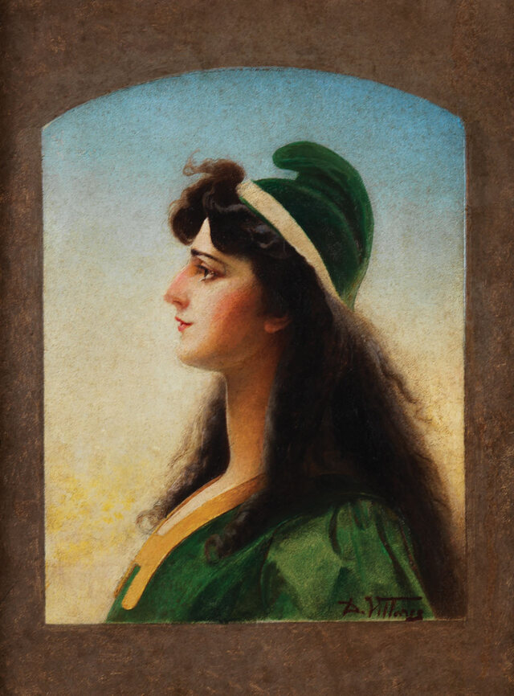
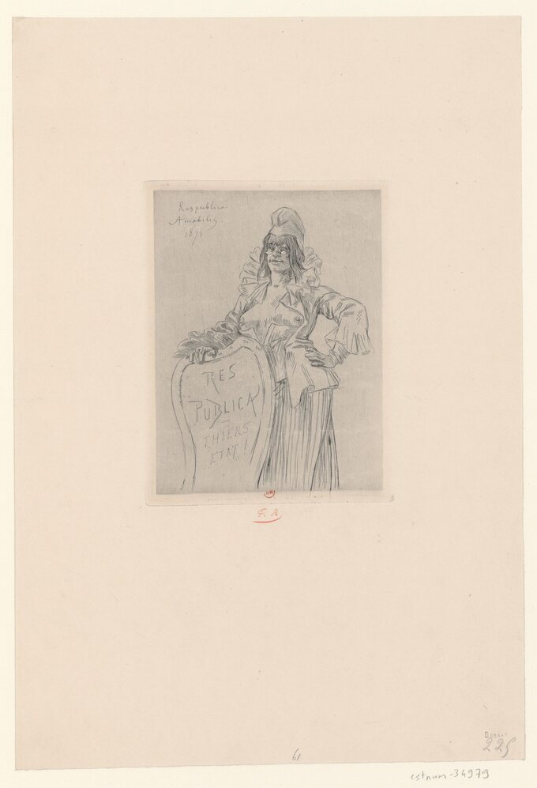
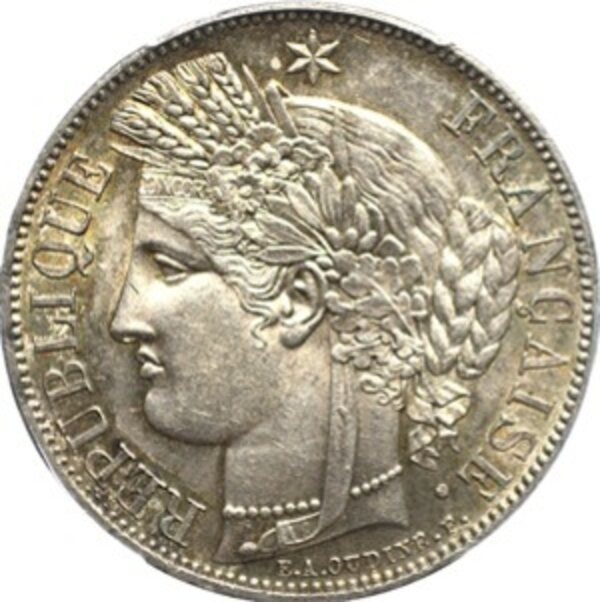
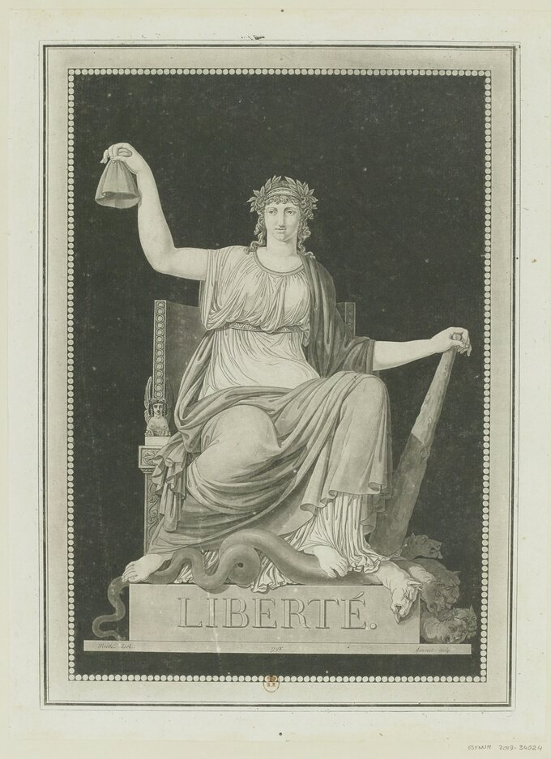
Britannia e Thatcher é o caso da inversão paradoxal. Na moeda de um pêni de 1912, Britannia senta-se com elmo, tridente, escudo: a nação como guerreira serena. Mas em 1983, durante a Guerra das Malvinas, a capa do The Sun funde Margaret Thatcher com Britannia. Marina Warner disse que Thatcher trouxe Britannia à vida. Aqui a estrutura se inverte de modo fascinante: uma mulher real só é admitida no centro do poder quando se deixa ler como alegoria. A exceção confirma a regra — a mulher entra no poder como imagem, não como sujeito.
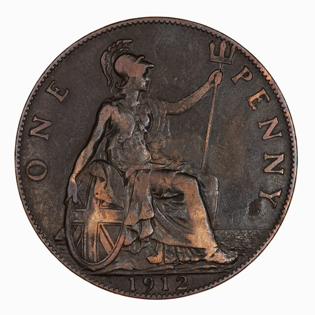
Columbia dá o caso mais didático do regime normativo. A Seated Liberty da moeda do século XIX é quase irmã de Britannia: a liberdade sentada, contida, monumental. A série Educational de 1896 mostra a alegoria feminina literalmente instruindo o cidadão. A nação tem corpo de mulher; a cidadania, não.
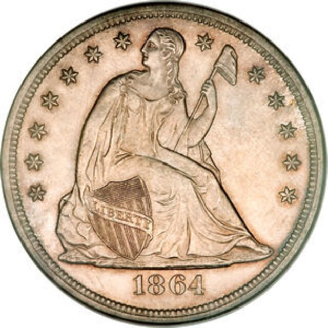
A República brasileira e o Contrato Racial Visual. Quando o modelo neoclássico atravessa o Atlântico, ele chega racializado. A alegoria branca em moedas, em brasões, na fachada do Supremo, numa nação negra. A branquitude é constitutiva da alegoria dita universal. E coloco deliberadamente ao lado o monumento colonial belga no Congo: a mesma gramática que exalta a mulher-nação na metrópole justifica a tutela sobre os povos colonizados, lidos como femininos e imaturos.
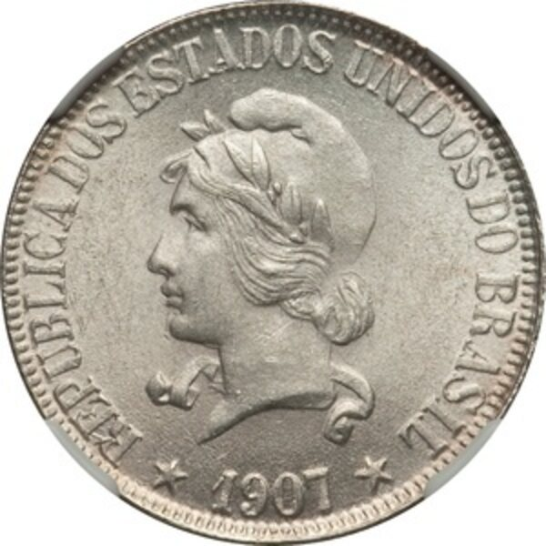
Justitia — a alegoria mais óbvia e mais reveladora. A venda nos olhos é lida como imparcialidade. Mas Marina Warner inverte: a Justiça é cega não por virtude, mas porque não se enxerga a si mesma no espelho do poder. A balança é um instrumento que pesa, julga, decide; mas quem segura a balança não é sujeito de direito. A balança é uma arma, e nas mãos dela, uma arma que não lhe pertence.
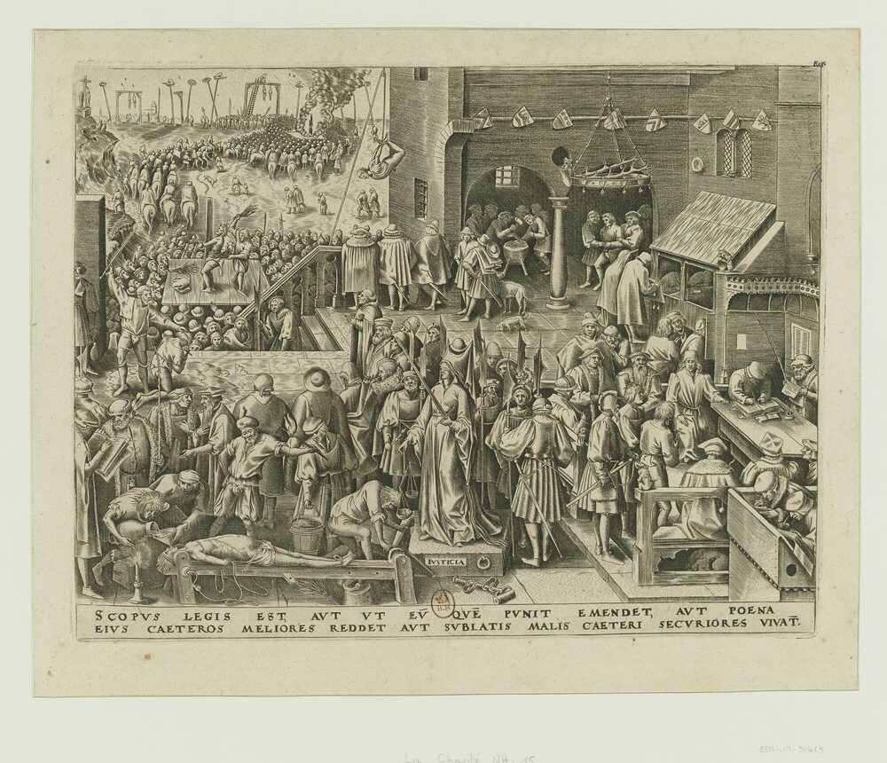
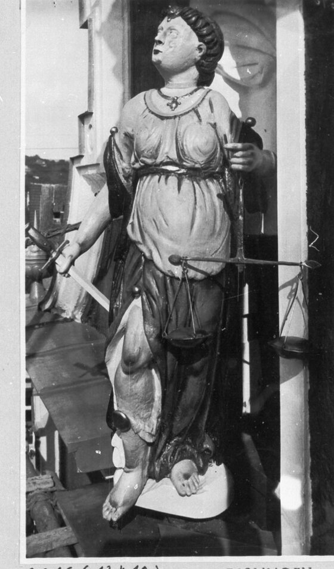
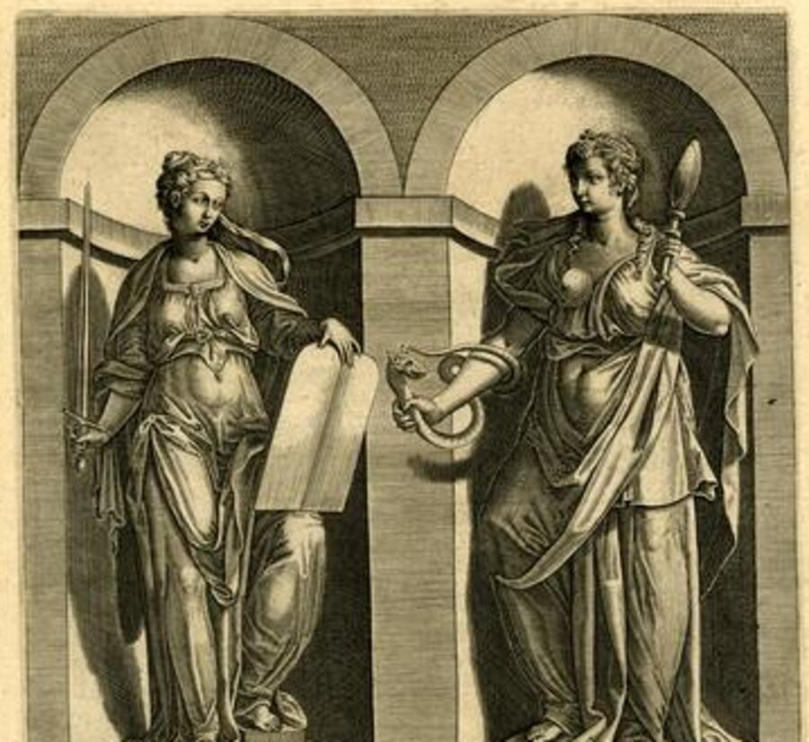
Mas o regime não é total. As imagens são, no sentido de Benjamin, ruínas: carregam fissuras que podem ser reativadas.
Movimentos feministas, abolicionistas, operários, ao longo dos séculos dezenove e vinte, subverteram, destruíram e ressignificaram esses símbolos. E o presente não escapa: pensem em como alegorias e símbolos do Estado foram disputados, atacados e reapropriados em episódios recentes de crise democrática.
A mesma imagem que disciplina pode ser virada do avesso. O Contrato Sexual Visual descreve uma dominação; mas descrevê-la é o primeiro gesto para contestá-la.
Se aceitarmos que o Direito governa também pelo olhar, que a lei não é apenas o texto, mas também a imagem através da qual o texto se torna reconhecível, então a história do direito precisa aprender a ler imagens.
Não como ilustração. Não como decoração. Como argumento. Como tecnologia de poder.
A moeda que circula em suas mãos todos os dias está fazendo trabalho jurídico. O brasão na fachada do tribunal está produzindo autoridade. A escultura da Justiça na praça está disciplinando a imaginação sobre o que é a lei.
Ignorar isso é deixar metade do direito invisível. É deixar que o poder continue a governar através de imagens que ninguém nomeou como imagens, que ninguém pôs em questão porque as tomou como símbolos inofensivos, patrimônio histórico, ornamento.
Mas alegorias não são ornamento. São instituições visuais. E quando essas instituições sistematicamente representam o poder como feminino enquanto subordinam as mulheres reais, isso é uma estrutura que merece ser nomeada, medida, contestada.
Minha pesquisa, então, não é sobre arte. Não é sobre a história da representação como um passeio pelo museu. É sobre o poder: sobre como o poder se veste, se apresenta, se torna visível de forma a parecer inevitável.
A pergunta que me move desde o mestrado até agora é simples e implacável: como a mesma estrutura que nega direitos à mulher consegue exaltá-la como símbolo do direito? E a resposta, temo, é que não são estruturas diferentes. São a mesma estrutura funcionando em dois registros: um que subordina, outro que glorifica. Um que silencia, outro que celebra.
Chamar isso de Contrato Sexual Visual, de Feminilidade de Estado, de Contrato Racial Visual: isso é nomear o inominado. E nomear é o primeiro passo para recusar.
O que proponho é uma leitura do direito que o veja em sua inteireza: como texto, sim, mas também como imagem; como norma, sim, mas também como estética; como lei, sim, mas também como afeto.
Se essa leitura fizer sentido para vocês, então talvez a história do direito possa se fazer diferentemente daqui para frente.
“United by marriage, chained by nationality” · Mestrado em Direito Internacional · PPGD/UFSC.
Tema: nacionalidade dependente da mulher casada, 1804–1957. Fio: ius sanguinis a patre.
145 itens de iconografia estatal e jurídica.
6 países: França, Reino Unido, Alemanha, EUA, Bélgica, Brasil. 8 suportes: moeda, selo, monumento, arquitetura, gravura, frontispício, papel-moeda, cartaz. 88% codificados.
Fundacional-sacrificial · maternidade, dor e sangue.
Normativo-jurídico · Justiça, Liberdade, República.
Militar-imperial · vitória, guerra, heroísmo cívico.
9/10 indicadores diferem entre regimes (Kruskal-Wallis, p < 0,05).
R² = 0,49 · regime e suporte predizem o endurecimento.
MCA · famílias alegóricas transnacionais.